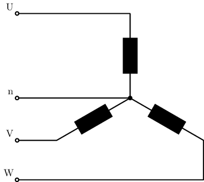
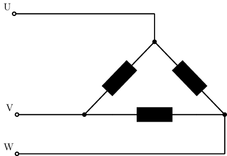

El generador trifàsic#
En la pràctica, a les centrals elèctriques (tèrmiques, nuclears o hidràuliques), al rotor tenim tres bobines desplaçades \(120^{\circ}\). Per tant es generaran 3 voltatges sinosoidals amb un desfasament també de \(120^{\circ}\) :
Show code cell source
import matplotlib.pyplot as plt
import numpy as np
from math import pi
Um=311
f=50
w=f*2*pi
T=1/f
t = np.linspace(0, 3.2*T, 300)
e1 = Um*np.sin(w*t)
e2 = Um*np.sin(w*t+2*pi/3)
e3 = Um*np.sin(w*t+4*pi/3)
fig, ax = plt.subplots(1, 1, figsize=(5, 3), layout='constrained')
ax.plot(t, e1, label=r"$U = U_m sin(\omega t)$")
ax.plot(t, e2, label=r"$V = U_m sin(\omega t + 120^{\circ})$")
ax.plot(t, e3, label=r"$W = U_m sin(\omega t + 240^{\circ})$")
ax.legend(loc=1)
#ax.axhline(color="black")
ax.axis([0, 3.2*T, -400, 400])
ax.set_xticks([0,T], ['0','$T$'])
ax.set_yticks([-Um,0,Um], ['$-U_m$','0','$U_m$'])
ax.set_title('fem generada')
plt.show()
Molt interesant és l’efecte generat quan mesurem la diferència de potencial generada entre qualsevol dues bobines:
Show code cell source
import matplotlib.pyplot as plt
import numpy as np
from math import pi
Um=311
U3f=np.sqrt(3)*Um
f=50
w=f*2*pi
T=1/f
t = np.linspace(0, 3.2*T, 300)
e1 = Um*np.sin(w*t)
e2 = Um*np.sin(w*t+2*pi/3)
e3 = Um*np.sin(w*t+4*pi/3)
fig, ax = plt.subplots(1, 1, figsize=(5, 3), layout='constrained')
ax.plot(t, e1, label=r"$U = U_m sin(\omega t)$")
ax.plot(t, e2, label=r"$V = U_m sin(\omega t + 120^{\circ})$")
ax.plot(t, e2-e1, label=r"$V(t) - U(t)$", color="magenta")
ax.legend(loc=1)
#ax.axhline(color="black")
ax.axis([0, 3.2*T, -600, 600])
ax.set_xticks([0,T], ['0','$T$'])
ax.set_yticks([-U3f,-Um,0,Um,U3f], ['$-\sqrt{3}U_m$','$-U_m$','0','$U_m$','$\sqrt{3}U_m$'])
ax.set_title('fem generada')
plt.show()
Com veieu obtenim una diferència de potencial sinosoidals del mateix període pero amb l’amplitud incrementada en un factor \(\sqrt{3}\). Com tenim 3 voltatges generats, podem escollir 3 parelles diferents d’ells que, com caldria esperar, també estàn desfasats \(120^{\circ})\) entre ells:
Show code cell source
import matplotlib.pyplot as plt
import numpy as np
from math import pi
Um=311
U3f=np.sqrt(3)*Um
f=50
w=f*2*pi
T=1/f
t = np.linspace(0, 3.2*T, 300)
e1 = Um*np.sin(w*t)
e2 = Um*np.sin(w*t+2*pi/3)
e3 = Um*np.sin(w*t+4*pi/3)
fig, ax = plt.subplots(1, 1, figsize=(5, 3), layout='constrained')
ax.plot(t, e1, label=r"$U(t)$")
ax.plot(t, e2, label=r"$V(t)$")
ax.plot(t, e3, label=r"$W(t)$")
ax.plot(t, e2-e1, label=r"$V(t) - U(t)$", color="magenta")
ax.plot(t, e3-e2, label=r"$W(t) - V(t)$")
ax.plot(t, e1-e3, label=r"$U(t) - W(t)$")
ax.legend(loc=1)
#ax.axhline(color="black")
ax.axis([0, 3.2*T, -600, 600])
ax.set_xticks([0,T], ['0','$T$'])
ax.set_yticks([-U3f,-Um,0,Um,U3f], ['$-\sqrt{3}U_m$','$-U_m$','0','$U_m$','$\sqrt{3}U_m$'])
ax.set_title('fem generada')
plt.show()
Ja que la tensió eficaç \( U = \frac{1}{\sqrt{2}} \cdot U_m\), la mateixa proporció la trobem entre els valors eficaços.
Aixó podem connectar de dos formes diferents les tres bobines:
Connectant a una línia, anomenada neutre, un extrem de cada una de les bobines. Obtindrem 3 voltatges amb un valor eficaç \(\sqrt{3} \cdot U\) en connectar a cada parella de bobines en sèrie, i altres tres voltatges amb un valor eficaç \(U\) entre l’extrem lliure de cada bobina i el neutre. Així ens trobem que a Europa es treballa amb 400V/230V. Aquesta és l’anomenada connexió en estrella.
Connectant cada extrem d’una bobina a l’extrem d’una altra bobina. Obtindrem 3 voltatges amb un valor eficaç \(U\). Aquesta és l’anomenada connexió en triangle.
Cal tenir present que la connexió en estrella es la utiltzada als generadors de les centrals i a les escomeses dels edificis. Així a un mateix edifici es disposa, connectant les 3 fases, de 400V per l’ascensor i els forns elèctrics industrials o d’altre maquinària, i a la vegada es disposa, connectant entres fases i neutre, de 230V pels aparells habituals d’oficines i habitatges.
Connexió en estrella#

\(\Large U_L = \sqrt{3} \cdot U_b\)
\(\Large I_L = I_b\)
\(\Large S = \sqrt{3} \cdot U_L \cdot I_L\)
\(\Large P = \sqrt{3} \cdot U_L \cdot I_L \cdot cos\varphi\)
Connexió en triangle#

\(\Large U_L = U_b\)
\(\Large I_L = \sqrt{3} \cdot I_b\)
\(\Large S = \sqrt{3} \cdot U_L \cdot I_L\)
\(\Large P = \sqrt{3} \cdot U_L \cdot I_L \cdot cos\varphi\)
Show code cell source
from IPython.display import YouTubeVideo
YouTubeVideo('7zxrYZ69MLk')
Show code cell source
from IPython.display import YouTubeVideo
YouTubeVideo('MivJqWuwEHQ')
Show code cell source
from IPython.display import YouTubeVideo
YouTubeVideo('FU4i1_9Xkqw')
Velocitat de sincronisme#
Com heu vist als vídeos anteriors, la velocitat de sincronisme d’un generador és
\(\Large n_s = \frac{60 \cdot f}{p} min^{-1}\)
on
\(n_s\) és la velocitat de sincronisme en revolucions per minut (\(min^{-1}\))
f és la freqüència del corrent produit
p és el nombre de parell de pols del generador. Si posem 4 pols magnètic en lloc de 2, en mitja volta s’haura produït un cicle complet del corrent.
Com a l’Unió Europea treballem a 50 Hz i a Estats Units a 60 Hz les freqüències de sincronisme típiques arreu del món [Ene18] són :
p |
f = 50 Hz (UE) |
f = 60 Hz (USA) |
|---|---|---|
1 |
3000 |
3600 |
2 |
1500 |
1800 |
3 |
1000 |
1200 |
4 |
750 |
900 |
5 |
600 |
720 |
6 |
500 |
600 |
Lliscament#
Es defineix el lliscament \(s\) com
\(\Large s = \frac{n_s - n_r}{n_s}\)
on:
\(n_s\) és la velocitat de sincronisme, donada per la freqüència de la xarxa
\(n_r\) és la velocitat de gir del rotor
Els generadors asíncrons han de girar més ràpidament que la velocitat de sincronisme, \(n_r > n_s \Rightarrow s < 0\), com es pot veure a la corba característica mecànica \(\Gamma(n)\), en color blau a la següent gràfica :

Estabilitat de les màquines asíncrones#
Fixeu-vos com aquestes màquines asíncrones només són estables entre el màxim relatiu de la corba blava (\(n_m{ín}\)) i el seu mínim relatiu (\(n_{màx}\)):
\(n < n_{mín} \Rightarrow \) la màquina es comporta com un motor, absorbeix energia de la xarxa elèctrica. Però si per qualsevol motiu baixa la velocitat, baixarà el moment i la màquina entrara en un bucle fins aturar-se.
\(n > n_{mín} \Rightarrow \) la màquina es comporta com un alternador, donant energia a la xarxa elèctrica. Però si per qualsevol motiu puja la velocitat, pujarà el moment i la màquina entrara en un bucle d’acceleració i s’embalarà possiblement fins avariar-se .
\(n_{mín} < n < n_{màx} \Rightarrow\) la màquina es comportarà com un motor (\(s > 0\)), guanyant moment si es frena i per tant recuperant l’estabilitat; o bé la màquina es comportarà com un alternador (\(s < 0\)), perdent moment si guanya velocitat i per tant estabilitzant-se. En amdos casos són comportaments estables.